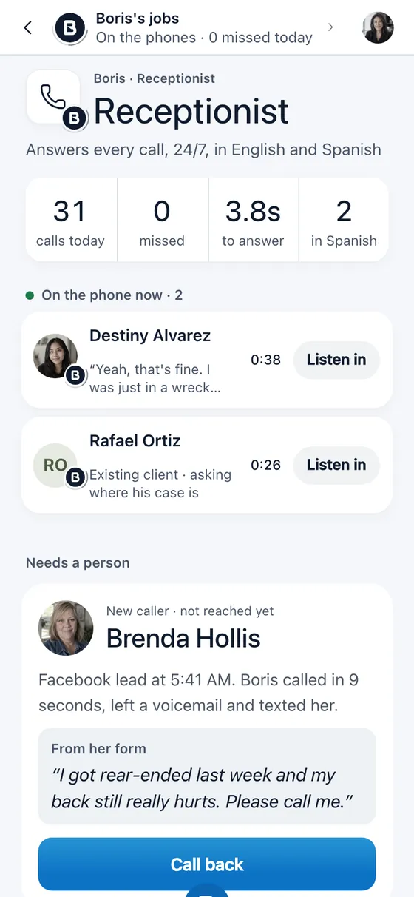
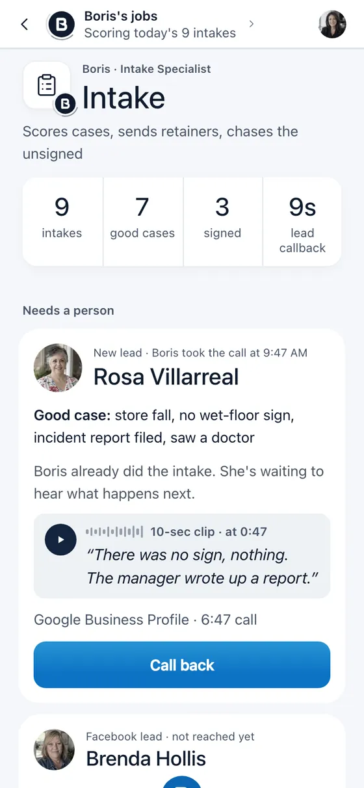
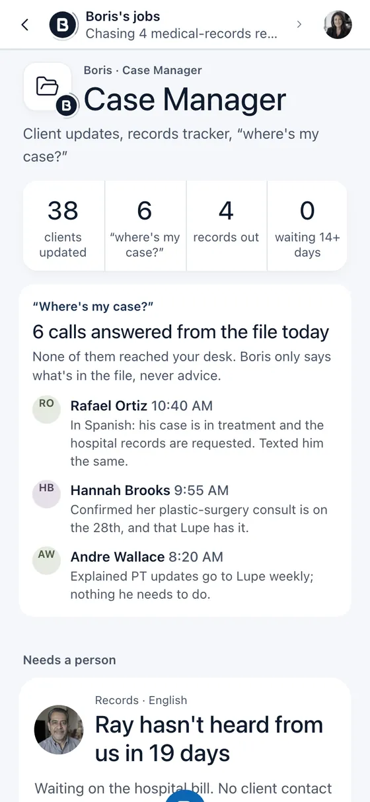
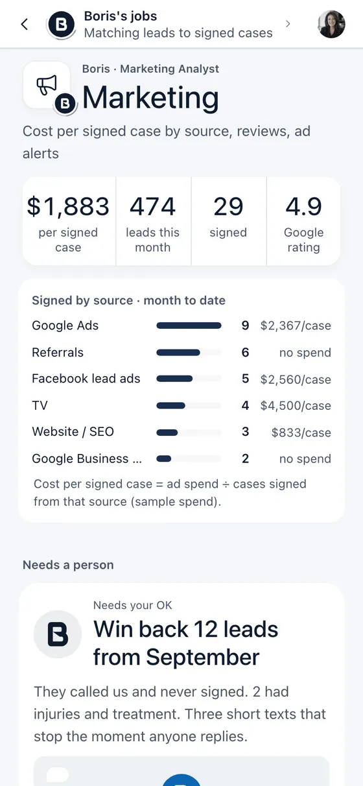
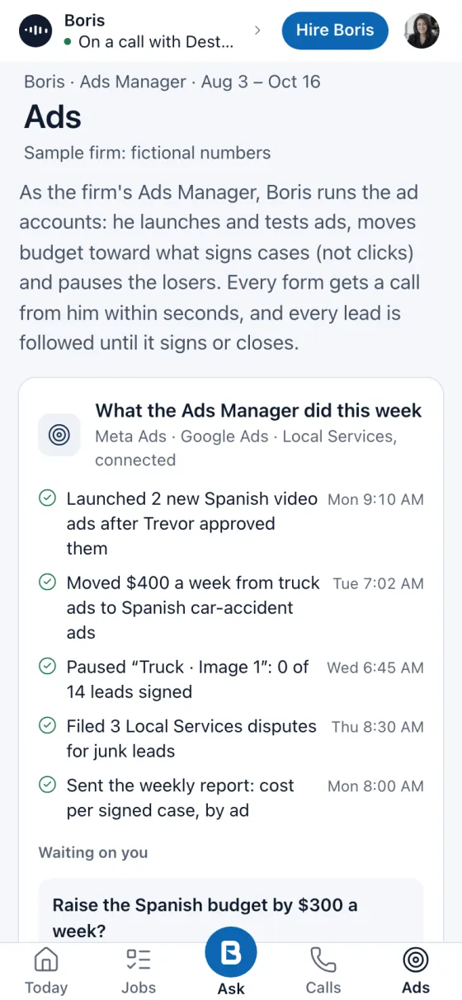

One AI employee across your whole firm. He signs up the good cases, chases every record, drafts for your attorneys, runs your ads and remembers everything, inside the rules your firm sets. Anything that matters, he asks you first.
Drafting a demand for Marcus B. from 214 pages of records…
Just done
Ads Manager · moved $400 a week to the ads that sign
Case Manager · ER records in for Maria G. · filed
Intake · Dana P. signed the retainer
Sample firm. Nobody real was called.
Watch Boris work a day at a firm
One night and morning at a sample firm, recorded in the real Boris app: a 2:07 AM call, a signed case, a client check-in, an ad budget change he asked about first, and the morning report.
Why firms lose cases
40%of law firms answered a new client's call in a 2024 secret-shopper test.1
20%of the firms that missed the call ever called back.1
26%of law firms never respond to an online lead at all.2
One Boris. Every desk your team never catches up on.
He learns your firm once and works every job you hire him for. The routine, he just does. What matters, he asks first.

Receptionist
Every call answered. Nights, weekends, lunch.
Picks up in seconds, 24/7, in English or Spanish
Knows existing clients by their number and their case
Books consults and callbacks right on your calendar
Routes the urgent ones: warm-transfers or texts the right person
Texts the caller and your team a summary of every call
Asks first: before sharing anything about a case with anyone who isn't the client. Adjusters get a message, not answers.
No more "please leave a message." Every caller gets an answer and a next step.

Intake Specialist
Qualifies the case while the caller is still on the line.
Asks your questions: incident date, injuries, treatment, insurance, liability
Checks the statute of limitations and flags close deadlines
Scores every case on your firm's own rules
Sends the retainer for e-sign once an attorney says OK
Calls web leads back in seconds, and chases unsigned leads until they sign or say no
Asks first: before a retainer goes out, and before he turns anyone away.
Good cases get signed before another firm calls them back.

Case Manager & Paralegal
The chasing, done. Every file keeps moving.
Calls records desks until the medical records and bills come in
Checks in with every client each week, in English or Spanish
Tracks treatment: still treating, next visit, discharged
Answers "where's my case?" straight from the file
Watches lien balances, the PIP clock and every deadline
Builds the demand-prep packet (records, bills, treatment timeline) for attorney review
Asks first: demands, lien deals, settlement numbers and anything that goes out with money attached.
200files per case manager, instead of 100.
Our estimate: about 29 hours a week saved for every 100 cases. We measure it with each pilot firm.

Marketing
Reports what every signed case really cost.
Tags every lead with where it came from: ads, referrals, Google, word of mouth
Shows cost per signed case by source, every morning
Flags sources that bring calls but no cases
Asks happy clients for reviews and tracks referrals
Asks first: before any review request or message goes out to a client.
The analyst: you see what's working. He reports; the Ads Manager runs the ads.

Ads Manager
Runs your ads for signed cases, not clicks.
Connects to your Meta, Google Ads and Google Local Services accounts
Launches and tests new ads for each kind of case
Moves budget toward what actually signs cases, and pauses the losers
Watches cost per signed case every day
Sends you a plain-English report every week
Asks first: before any budget increase, any new campaign and any new ad going live. Ad copy follows your state bar's lawyer-advertising rules, and your firm approves every new ad. He never promises results or quotes case values.
Your media buyer, who sees every lead all the way to a signed retainer. An add-on job.
Text Boris or chat with him in the app, like you would your best employee. He does it, asks first when it matters, and reports back with a receipt.
Managing partner · 8:02 AM
Call back everyone from last night who didn't sign.
On it. 6 people called after 6 PM and haven't signed. Calling them now, and texting anyone who doesn't pick up.
Done · 8:41 AM
Reached 4 · 2 consults booked (Thu 10:00, Fri 1:30) · 1 not a case · 2 texted. All logged in their files.
Case manager · 10:15 AM
Where are the records for Martinez?
Southside Rehab sent the bills on 10/14. The ER records from Methodist are still out: requested 10/2, followed up 10/9 and 10/16. Next call is Monday. Want me to call them today instead?
Yes, today.
Calling now. I'll tell you what they say.
Attorney · 2:38 PM
Send the retainer to the 2pm lead.
That's Dana Price: rear-ended on I-10, in treatment, scored 84. A sign-up, so I'm asking first.
Send itNot yet
Send it.
Sent for e-sign · 2:41 PM
I'll text Dana a reminder tonight if it isn't signed.
Every call, text, email, note and case update goes into one place that belongs to your firm. Every job Boris does draws on it, and your whole team can ask it anything.
Calls
Texts
Email
Case software
Calendar
Team notes
Your Firm BrainEvery caller, case, conversation and rule
Receptionist
Intake
Case Manager
Paralegal
Marketing
Ads Manager
Chat
Remembers every caller
Someone calls back three weeks later? He knows who they are, what happened and what was promised.
Every case, every conversation
Each call, text and update lands in the file, so the next step always starts where the last one ended.
Your rules and preferences
"Trucking cases go to Reyes." "No consults on Fridays." Tell him once. He follows it on every job.
Shared by the whole team
Attorneys, intake, case managers: one source of truth. No more "who talked to this client last?"
Nothing walks out the door
When a case manager leaves, what they knew stays. The brain belongs to your firm.
Ask him anything about any case
"When did Marcus last see his doctor?" You get the answer and where it came from.
Firm Brain · Marcus Bell
Rear-end on Loop 410. Signed same day.
Prefers texts after 5 PM. Spanish for his mom's calls.
Finished physical therapy. Discharged.
Final bills requested from Southside Rehab.
Called asking for status. Booked with Attorney Reyes, Thu 2 PM.
Example client at a fictional firm.
Why it matters: an answering service forgets the caller when it hangs up. A one-trick AI receptionist starts from zero on every call. Boris remembers, so every job he does gets better the longer he works for you.
Other AI agents need you to build them. Boris is already on the job.
Dots, Grok Bot, Muse and Cowork are impressive general assistants. You still have to set them up, teach them your firm and check their work. Boris is already trained for a PI firm and on the job.
Task
General AI agentsDots · Grok Bot · Muse · Cowork
Boris
Answers your firm's phone 24/7, in English or Spanish
No phone line
Screens, scores and books the case while the caller is still on the line
Not built for calls
Calls web leads back in seconds and chases unsigned leads until they sign
Waits for you to ask
Chases records desks and checks in with every client each week
Remembers every call, case and client, shared by your whole firm
Remembers per user
Runs your ads and reports cost per signed case
Can't see your cases
Asks the attorney first: retainers, money, anything legal
General-purpose rules
Every action logged for your firm to review
Chat history
Set up for you, live in 3 business days
You build and maintain it
How you pay
Per person, plus your time
Flat monthly, whole firm included
Dots (OpenAI), Grok Bot (xAI), Muse (Meta) and Claude Cowork (Anthropic) are trademarks of their owners. Based on their public product information as of October 2026.
The math
What do missed calls cost your firm?
Put in your own numbers. The starting values are only an example.
Hit "Explore the live demo" and fill in a short form. You get instant access to the Boris app running a sample personal injury firm with demo data, so you can click through his jobs, calls, chat and activity log. No card and no sales call. If you want a guided tour for your firm, book a 20-minute walkthrough.
Does he remember everything?
Yes. Each firm gets one Firm Brain. Every call, text, email and note Boris handles goes into it, along with your rules and preferences. Your whole team shares it, and it stays with your firm when staff leave. You choose what he can read, and every action is in the activity log.
Can I just tell him what to do?
Yes. Text him or chat with him in the app in plain English: "call back last night's leads", "where are the records for Martinez?", "send the retainer to the 2pm lead". He does the routine on his own, asks first on anything that matters, and reports back.
Is Boris a person?
No. Boris is an AI employee. He says so at the start of every call, and every call is recorded.
What does he do on his own, and what does he ask first?
You decide. Out of the box he just does the routine: answers calls, calls leads back, chases records and bills, checks in with clients and logs it all. He asks first before sign-ups, anything legal and anything with money. You can move any action to "ask me first".
Will he replace my staff?
He takes the chasing: callbacks, check-ins, follow-ups, records. Your people keep the judgment calls. Most firms use him to grow the caseload without the next hire.
Can he run our ads?
Yes, as an add-on job: Ads Manager. Connect your Meta, Google Ads and Local Services accounts and he launches and tests ads, moves budget toward what signs cases and pauses the losers. He asks before any budget increase, new campaign or new ad, your firm approves every ad, and the copy follows your state bar's advertising rules. Marketing is a separate job: it reports where your cases come from.
Does he work with our case software?
Boris connects to the case software you already use, so nobody moves systems. Tell us yours on a walkthrough call and we'll show you how it fits.
Can he give legal advice or settle a case?
No. He never gives legal advice, never negotiates, never accepts an offer and never signs or files anything. Those go to your attorneys.
Does he speak Spanish?
Yes. He answers and checks in with clients in English or Spanish, and texts summaries in the caller's language.
What about medical records?
Boris handles no medical records until the privacy agreements (BAAs) are signed for your firm. Every request he sends uses your firm's own authorization forms.
How is it priced?
One flat monthly price for Boris, every job included, plus a one-time launch fee. Never a percentage of fees or settlements.
Is there a guarantee?What does "one firm per market" mean?
We take one personal injury firm per metro as a founding firm. Your competitors across town can't get Boris at founding terms while you're with us.
How do we start?
Two ways. Already sure? Hire Boris online: pick monthly or annual, add the Ads Manager if you want it, check out, and he's live within 3 business days of finishing your setup checklist. Want to see it fit your firm first? Explore the demo or book a 20-minute walkthrough. Either way we set Boris up on your phones and software, load your Firm Brain, test him on your calls, then turn him on job by job.
Explore the live demo
Get instant access to the live demo
The real Boris app on a sample PI firm. No card, no sales call needed. His jobs, his calls, his chat, his activity log.
Instant access
Sample firm with demo data
Want a guided tour? Book a 20-minute call
You're in.
The Boris demo opens in a new tab: a sample firm with demo data. Start on Today, then tap Ask and give him a job.